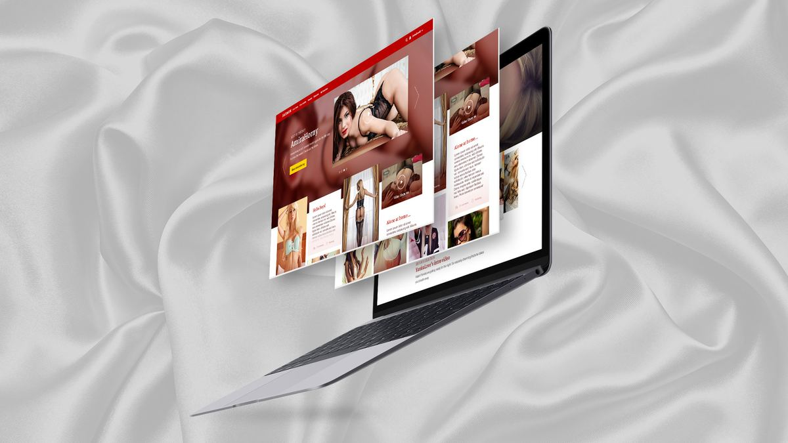
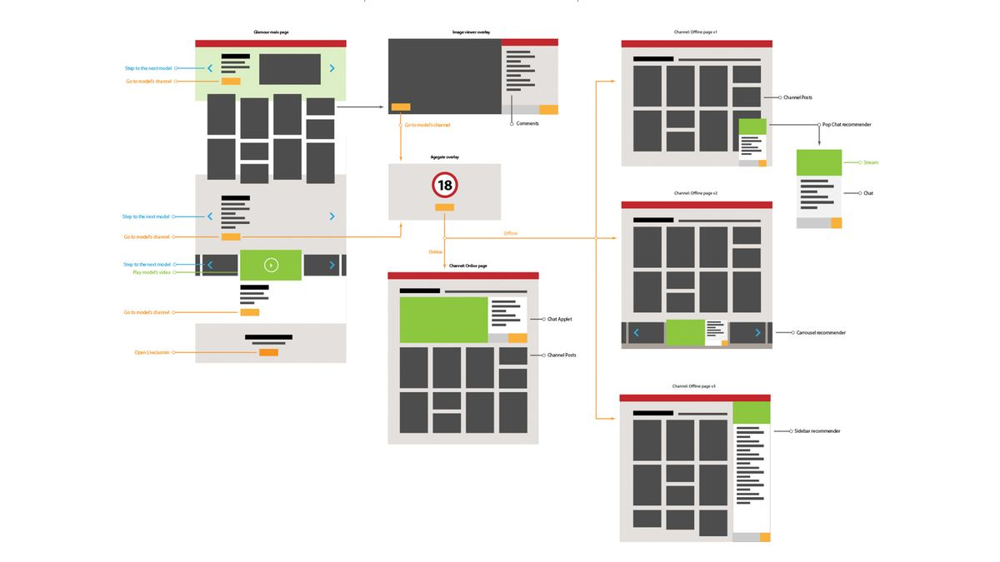
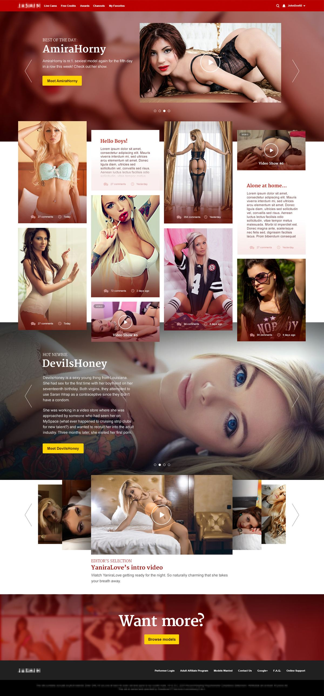
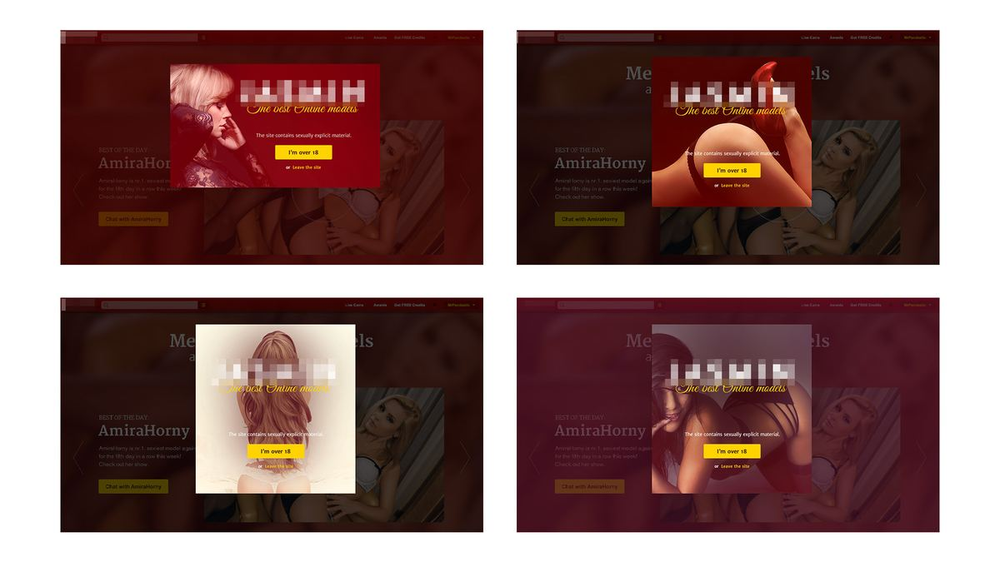
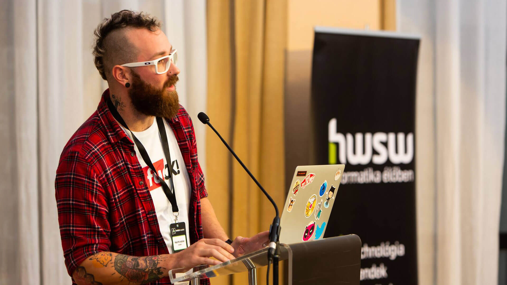

Glamorous Camsite ▓▒░
Senior UI/UX Designer @ Docler Holding - 2014
Well… this was part of my portfolio for 4 years when…
"Therefore, we demand that you immediately stop using our trademarks and stop displaying the designs created for Docler. You may continue mentioning LiveJasmin as a reference for your past work."
Legal Department of Docler Holding, 7th of October, 2020
So let's see a slightly censored version of it - let's just call it LiveCamsite.

¬ Context
LiveCamsite is one of the first cam sites in the world and is still a market leader in the industry. There are a lot of difficulties in general growth when you reach the boundary between mainstream and the "things we are not talking about".
LiveCamsite wanted to break out from this, to create a "soft" and glamorous version of the platform, to widen the possibilities for the models. The standalone Camsite.com was born. Since it changed a lot, these days it's a completely separate product, but I would like to talk about the first step of this journey.
LiveCamsite was famous for its high-quality standard, and continuously encouraged models to produce higher quality content, have photoshoots, prettify their studio. So one of the most challenging steps was already done before the project started.
¬ Research
The design started with market and user research. Our competitors in these projects are Playboy and other mainstream soft erotic magazines, and we can name Victoria's Secret as a huge inspiration as well. The target is the US, so I started to analyze the most searched and most viewed categories there. Thanks to Hollywood, it's still blue eyes, blonde, long legs…
Because of the high standard, all the models were handpicked for the project. Even though we had only a handful of models and couldn't guarantee they were online all the time, it was the moment to change content consumption habits as well. I introduced the idea of "offline" content for this project - prerecorded videos, photo sets and even textual posts. This helped me sketch the possible user flow.

¬ Design
The main page was populated with mostly visual content - a sexy catalogue, different sections, highlighted models with introductions and posts, even handpicked videos. But for the various types of posts, the models needed an extended profile, where live shows were accessible as well when they occurred.

The development followed a waterfall methodology, so I really needed to nail the design and do all my iterations before it went to the developers. Multiple user flows and layouts were checked with teammates and management before we got the final version. Unfortunately, I had no chance to gather model or customer feedback - the whole process happened internally, and I had to rely on statistics, analytics and management feedback.

I made rough prototypes as well to help the developers with the animations and visual elements: See an example →
¬ Outcome
Despite all the internal constraints, the project went live for millions of visitors and stayed up for nearly 2 years. As a lead designer with almost full creative freedom and authority, it made me incredibly proud.
¬ Takeaway
I'm grateful for the opportunity to work on a project like this. And about the difficulties of user research in the adult entertainment industry, I had the chance to give a talk at the HWSW Mobile Conference in Budapest in 2018.

Photo of me at the HWSW Conference